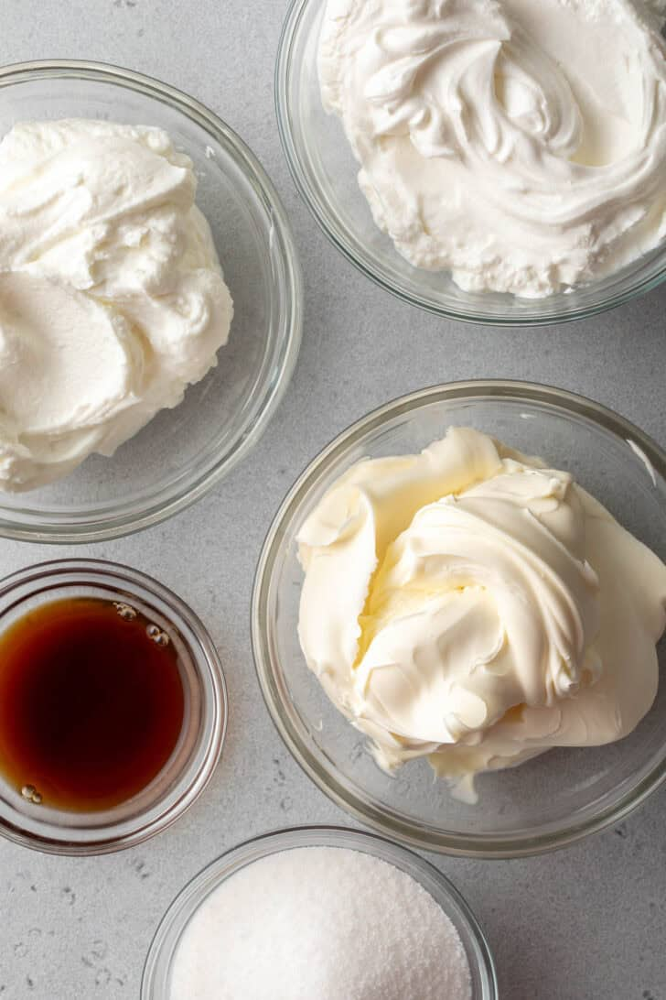
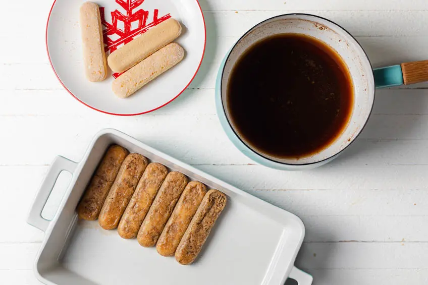
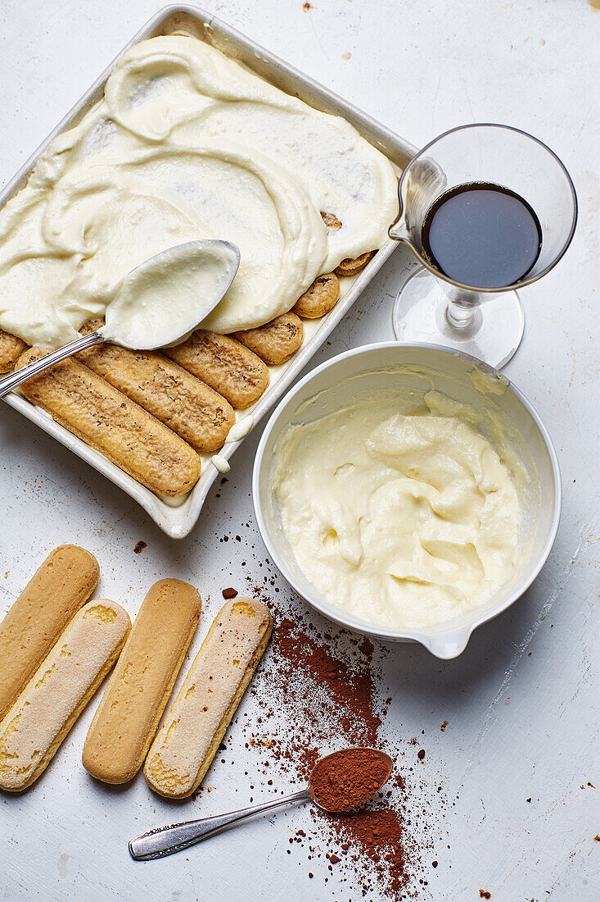
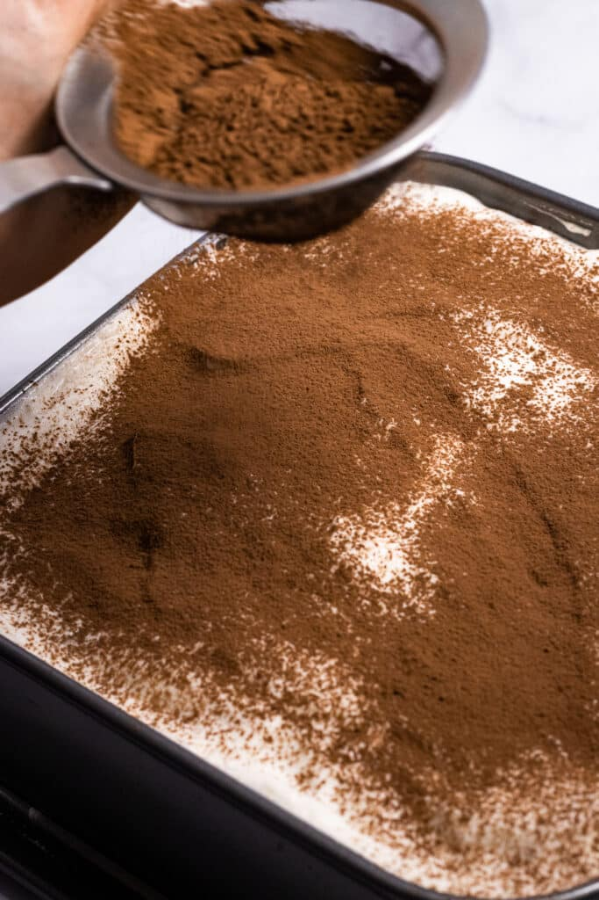
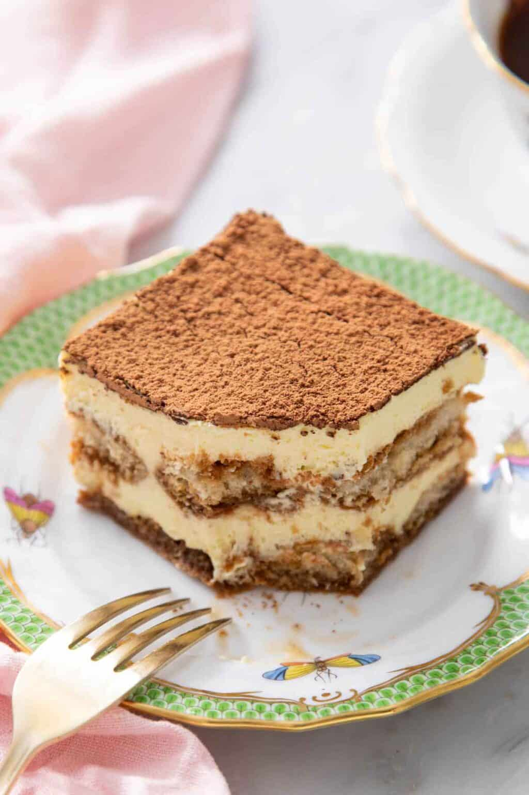

Welcome! If you're here, you're probably craving a luscious, creamy dessert Tiramisu. This classic
Italian treat layers coffee-soaked ladyfingers with rich mascarpone cream, creating a delicate balance of
flavors and textures.
This recipe is designed to be easy to follow, with simple ingredients and clear steps. Whether you're preparing
it for family, friends, or a special occasion, this tiramisu will impress and delight anyone who takes a bite.
Ingredients
Mascarpone Cream
250g mascarpone cheese
1 cup heavy cream
½ cup powdered sugar
1 tsp vanilla extract
Coffee Soak
1 cup strong brewed coffee, cooled
2 tbsp coffee liqueur or rum (optional)
Ladyfingers / Savoiardi
20-24 eggless ladyfinger biscuits (savoiardi)
Cocoa Topping
2-3 tbsp unsweetened cocoa powder
Grated dark chocolate for garnish (optional)
Preparation
Step 1: Whip the Mascarpone Cream

In a large bowl, combine mascarpone cheese, heavy cream, powdered sugar, and vanilla extract. Whip until smooth
and
creamy, with soft peaks forming. This will be the luscious filling for your tiramisu.
Step 2: Brew Coffee and Soak Ladyfingers
Brew strong coffee and let it cool. Add coffee liqueur or rum if desired. Quickly dip each ladyfinger into the
coffee,
making sure they absorb some liquid but do not become soggy.
Step 3: Lay the Ladyfingers

Arrange the dipped ladyfingers in a single layer at the base of your serving dish or pan. Ensure they fit snugly
and form
a solid base for the cream.
Step 4: Spread Mascarpone Cream

Evenly spread a generous layer of the whipped mascarpone cream over the ladyfingers. Smooth the surface with a
spatula.
Repeat with a second layer of dipped ladyfingers and cream if desired.
Step 5: Dust with Cocoa Powder

Lightly sift unsweetened cocoa powder over the top layer of mascarpone cream. This gives the classic tiramisu
look
and a touch of rich chocolate flavor.
Step 6: Serve and Enjoy

Chill the tiramisu in the refrigerator for at least 2 hours before serving to let the flavors meld. Cut into
squares
and enjoy your creamy, eggless Italian dessert!
Recipe Notes
Coffee soak: Dip the ladyfingers quickly to avoid sogginess. They should absorb some liquid
but still hold shape.
Chilling time: Refrigerate for at least 2 hours, preferably 4–6, so the flavors meld and
the dessert sets properly.
Mascarpone cream: Whip just until soft peaks form. Over-whipping can make the cream grainy.
Cocoa dusting: Sift cocoa powder right before serving to keep it fresh and vibrant.
Layering tip: Ensure even layers of ladyfingers and cream for a balanced texture and flavor
in every bite.
Serving suggestion: Cut into squares and serve chilled with a side of fresh berries or a
drizzle of chocolate sauce if desired.